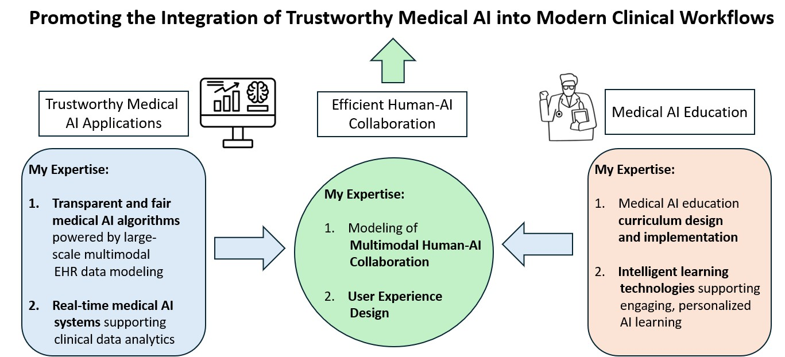

Research Interests
My broadly research interest is trustworthy AI in healthcare. I am particularly interested in below three areas:
1. Developing explainable and fair medical AI algorithms powered by large-scale multimodal electronic health records analytics.
2. Promoting AI competencies for medical professionals and students.
3. Designing human-centered medical AI intelligent systems for effective human-AI collaboration.
My Grants
-
(NIH R01, Role: Co-Investigator) XAI-IDEALIST: real-Time, explainable, and fair surgical risk surveillance with multimodal longitudinal electronic health records.
a. Designed and implemented a real-time intelligent medical AI system, incorporating large-scale multimodal electronic health records for continuous 24-hour surgical risk prediction, seamlessly deployed across both PC and mobile applications.
b. Design and developed novel explainable and fair machine learning frameworks for postoperative complication prediction using large-scale multimodal electronic health records.
c. Designed and developed novel federated learning approaches for addressing healthcare data privacy concerns
-
(NIH R25, Role: Co-PI) AI Passport for Health: A virtual online learning community enabling professionals in biomedical and healthcare sciences to aquire skills to integrate AI into their practices and research.
a. Designed and developed a user-centric virtual learning platform, integrating AI-driven features, to educate medical professionals and students on artificial intelligence applications.
b. Designed and implemented a six-week curriculum for teaching generative artificial intelligence and large language models for physicians and medical students at three hospital systems in Florida, including University of Florida (UF) Health Gainesville, UF Health Jacksonville, and UF Health Jacksonville North.
c. Organized extracurricular training programs and provided skill and professional development in AI for a diverse group of trainees, physicians, and early stage investigators in medicine.
Past Research Experience
-
(NIH Common Fund) Bridge2AI: Creating an ethically-sourced, AI-ready datasets from different American institutions to support future discoveries in clinical car.e
a. Created standards AI-ready data attibutes
b. Created automatic tools to accelerate the creation of FAIR (Findable, Accessible, Interoperable, and Reusable) datasets
-
(UF Presidential Strategic Fund) Health Metaverse: A digital infrastructure for an intelligent virtual hospital in which healthcare providers and patients can virtually gather, learn, and train.
a. Designed and developed the virtual metaverse of hospital ICU units with NVIDIA Omniverse.
b. Conducted polit studies in the virtual metaverse of hospital ICU units.
-
(UF Presidential Strategic Fund) Florida Digital Twin: A a technology platform for streamlining both the integration of environmental and health data for decision-making in Florida.
a. Large-scale multimodal electronic health records and environmental data curation for Jacksonville, Florida.
b. Developed noval algorithms to investigate the association of environmental data with patient-level social determinants of health (SDoH).
-
(NSF DRL) INVITE: AI Institute for inclusive intelligent technologies for education seeking to fundamentally re-frame how AI-based educational technologies interact with learners.
a. Designed and implemented novel adaptive multimodal machine learning approaches for managing noise and ambiguity when detecting confusion and conflict.
b. Conducted large-scale educational data analytics in the context of collaborative learning with pair-programming, group learning.
-
(NSF DRL) FLECKS: Fostering collaborative computer science learning with intelligent virtual companions for upper elementary students.
a. Developed novel machine learning frameworks for understanding students' dynamic learning processes in real classroom environments by analyzing their collaborative dialogues, speech, facial expressions, and gestures.
b. Designed and developed the online learning platform with intelligent virtual learning companions to understand and support collaboration and learning in classrooms.
c. Conducted classroom studies for deploying intelligent learning systems in real classroom environments and collected large-scale multimodal behavioral data from over 200 elementary school learners.
-
(NSF DRL) Camp Dialogues: Fostering computer science and AI learning through youth-led conversational app development experiences.
a. Developed the curriculum and assessment for four sessions of AI summer camps with over 50 middle school learners.
b. Co-led in-person summer camps, classroom activities for middle school students on conversational AI learning.